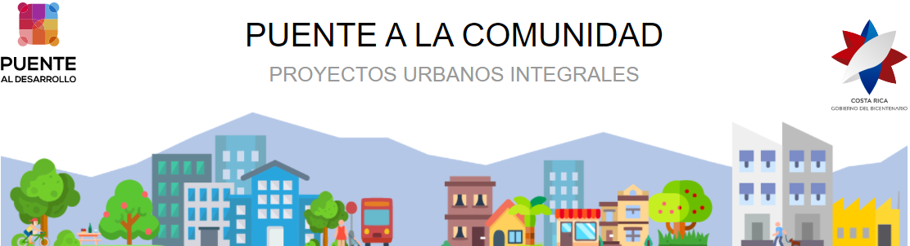
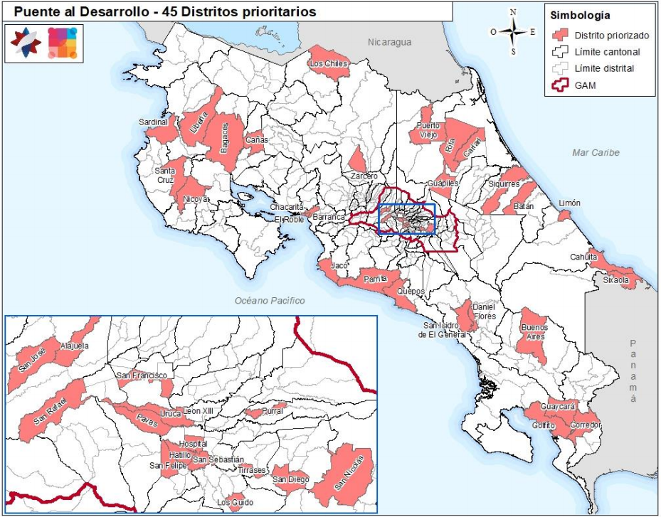
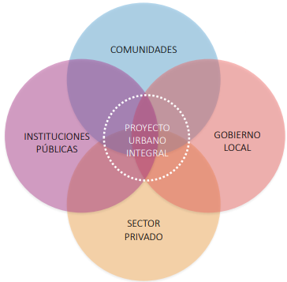

La política social del Gobierno del Bicentenario 2018-2022 plantea la ampliación de la Estrategia Nacional para la Reducción de la Pobreza denominada Puente al Desarrollo. Esta se renueva contemplando el cambio de lo conocido de Puente al Desarrollo como Puente al Bienestar, para la introducción de la dimensión territorial comunitaria y rural con las estrategias de Puente a la Comunidad, Puente al Agro y la dimensión sociolaboral por medio de la estrategia Puente al Trabajo. Como parte de esta nueva visión, también se incorpora una dimensión de Puente a la Prevención a nivel transversal y forma parte integral de todos los “puentes”.
La estrategia Puente a la Comunidad tiene como objetivo principal "Mejorar las condiciones del hábitat y participación en los territorios con presencia de asentamientos informales y vulnerabilidad, mediante la articulación de esfuerzos locales, públicos, privados, no gubernamentales y comunitarios que impulsen procesos de renovación y desarrollo urbano desde el enfoque de seguridad humana y desarrollo integral, con el fin de construir comunidades inclusivas, seguras, resilientes y sostenibles".
También busca conservar las áreas urbanas y prevenir su deterioro, rehabilitar las áreas urbanas con oferta insuficiente para la demanda existente de servicios, conectividad o infraestructura, así como atender asentamientos informales o vulnerables y desarrollar áreas urbanas bien servidas y bien localizadas. Así mismo aspira a fortalecer la convivencia comunitaria y el arraigo en el territorio.

Se han definido 45 distritos prioritarios en el territorio nacional por la Estrategia Integral de Articulación para la Seguridad Humana. Para la selección de estos 45 distritos se consideran los que tengan el mayor indice de pobreza multidimensional,la mayor cantidad población viviendo en asentamientos informales y los que posean la mayor cantidad de actividades delictivas.
A continuación se presentan los distritos que forman parte de Puente a la Comunidad

La herramienta para desarrollar la estrategia de Puente a la Comunidad en estos 45 distritos prioritarios, es por medio de Proyectos Urbanos Integrales (PUI) que son instrumentos de intervención urbana que abarcan las dimensiones físico, social e institucional y son coproducidos entre diversos actores de manera articulada y simultánea en un territorio determinado.

Para el desarrollo de los PUI's es vital conocer sitios potenciales en donde se puedan construir estos proyectos. Por lo que identificar los terrenos pertenecientes al Estado es uno de los primeros pasos dentro de toda la Estrategia.Se han seleccionado tres de los distritos prioritarios del cantón San José para realizar una prueba piloto e investigar y sistematizar los terrenos pertenecientes al Estado y Municipalidad de San José. En el siguiente mapa interactivo se pueden visualizar los terrenos ubicados en los tres distritos. Se muestran atributos de los terrenos como el propietario, el tipo de inmueble, las amenazas cercanas, el número asignado de finca según el Registro Nacional y la naturaleza de la finca. Estos insumos pueden contribuir al análisis espacial que deban realizar los tomadores de desición involucrados en la Estrategia.
En este mapa también se muestra la estimación del Deficit Habitacional, que es la suma del déficit cuantitativo (= total de hogares – total de viviendas) y el déficit cualitativo (= total de viviendas en mal estado + total de viviendas hacinadas en buen estado + total de viviendas hacinadas en estado regular). Se incluyen también los asentamientos informales del país, pues se espera la ejecución de los PUI´s repercuta positivamente en toda la población, pero especialmente en los pobladores de estos sitios.
Las principales características de estos distritos se pueden visualizar en los siguientes enlaces: